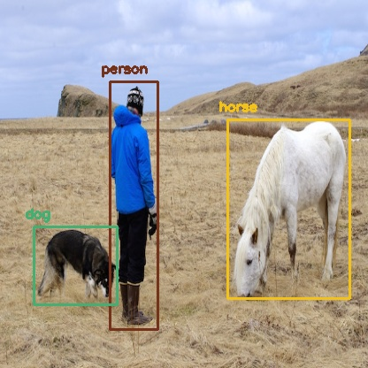
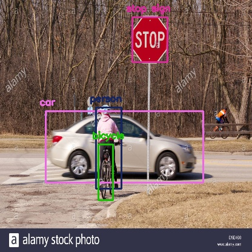
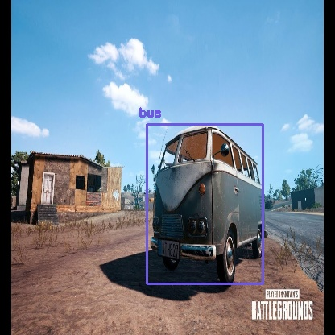

YOLO Object Detection with OpenCV and Python

Image Source: DarkNet github repo
{kind=link}
If you have been keeping up with the advancements in the area of object detection, you might have got used to hearing this word 'YOLO'. It has kind of become a buzzword.
What is YOLO exactly?
YOLO (You Only Look Once) is a method / way to do object detection. It is the algorithm /strategy behind how the code is going to detect objects in the image.
The official implementation of this idea is available through DarkNet (neural net implementation from the ground up in 'C' from the author). It is available on github for people to use.
Earlier detection frameworks, looked at different parts of the image multiple times at different scales and repurposed image classification technique to detect objects. This approach is slow and inefficient.
YOLO takes entirely different approach. It looks at the entire image only once and goes through the network once and detects objects. Hence the name. It is very fast. That’s the reason it has got so popular.
There are other popular object detection frameworks like Faster R-CNN and SSD that are also widely used.
In this post, we are going to look at how to use a pre-trained YOLO model with OpenCV and start detecting objects right away.
. . .
OpenCV dnn module
DNN (Deep Neural Network) module was initially part of opencv_contrib repo. It has been moved to the master branch of opencv repo last year, giving users the ability to run inference on pre-trained deep learning models within OpenCV itself.
(One thing to note here is, dnn module is not meant be used for training. It’s just for running inference on images/videos.)
Initially only Caffe and Torch models were supported. Over the period support for different frameworks/libraries like TensorFlow is being added.
Support for YOLO/DarkNet has been added recently. We are going to use the OpenCV dnn module with a pre-trained YOLO model for detecting common objects.
Let’s get started ..
Enough of talking. Let’s start writing code. (in Python obviously)
Installing dependencies
Following things are needed to execute the code we will be writing.
- Python 3
- Numpy
- OpenCV Python bindings
Python 3
If you are on Ubuntu, it’s most likely that Python 3 is already installed. Run python3 in terminal to check whether its installed. If its not installed use
sudo apt-get install python3
For macOS please refer my earlier post on deep learning setup for macOS.
I highly recommend using Python virtual environment. Have a look at my earlier post if you need a starting point.
Numpy
pip install numpy
This should install numpy. Make sure pip is linked to Python 3.x ( pip -V will show this info)
If needed use pip3. Use sudo apt-get install python3-pip to get pip3 if not already installed.
OpenCV-Python
You need to compile OpenCV from source from the master branch on github to get the Python bindings. (recommended)
Adrian Rosebrock has written a good blog post on PyImageSearch on this. (Download the source from master branch instead of from archive)
If you are feeling overwhelmed by the instructions to get OpenCV Python bindings from source, you can get the unofficial Python package using
pip install opencv-python
This is not maintained officially by OpenCV.org. It’s a community maintained one. Thanks to the efforts of Olli-Pekka Heinisuo.
Command line arguments
The script requires four input arguments.
- input image
- YOLO config file
- pre-trained YOLO weights
- text file containing class names
Download all of these files using the form below.
You can also download the pre-trained weights in Terminal by typing
wget https://pjreddie.com/media/files/yolov3.weights
This particular model is trained on COCO dataset (common objects in context) from Microsoft. It is capable of detecting 80 common objects. You can download the full list using the form above.
Input image can be of your choice. Sample input is available along with the source code for this post.
Run the script by typing
$ python yolo_opencv.py --image dog.jpg --config yolov3.cfg --weights yolov3.weights --classes yolov3.txt
Preparing input
Read the input image and get its width and height.
Read the text file containing class names in human readable form and extract the class names to a list.
Generate different colors for different classes to draw bounding boxes.
net = cv2.dnn.readNet(args.weights, args.config)
Above line reads the weights and config file and creates the network.
blob = cv2.dnn.blobFromImage(image, scale, (Width,Height), (0,0,0), True, crop=False)
net.setInput(blob)
Above lines prepares the input image to run through the deep neural network.
Output layer and bounding box
Generally in a sequential CNN network there will be only one output layer at the end. In the YOLO v3 architecture we are using there are multiple output layers giving out predictions. get_output_layers() function gives the names of the output layers. An output layer is not connected to any next layer.
draw_bounding_box() function draws rectangle over the given predicted region and writes class name over the box. If needed, we can write the confidence value too.
Running inference
outs = net.forward(get_output_layers(net))
Above line is where the exact feed forward through the network happens. Moment of truth. If we don’t specify the output layer names, by default, it will return the predictions only from final output layer. Any intermediate output layer will be ignored.
We need go through each detection from each output layer to get the class id, confidence and bounding box corners and more importantly ignore the weak detections (detections with low confidence value).
Non-max suppression
Even though we ignored weak detections, there will be lot of duplicate detections with overlapping bounding boxes. Non-max suppression removes boxes with high overlapping.

Source: PyImageSearch
Finally we look at the detections that are left and draw bounding boxes around them and display the output image.
  {kind=link}
{kind=link}
{kind=link}
I do not own the copyright for the images used in this post. Please refer source for copyright info.
Summary
In this post, we looked at how to use OpenCV dnn module with pre-trained YOLO model to do object detection. We can also train a model to detect objects of our own interest that are not covered in the pre-trained one.
We have only scratched the surface. There is a lot more to object detection. I will be covering more on object detection in the future including other frameworks like Faster R-CNN and SSD. Be sure to subscribe to get notified when new posts are published.
That’s all for now. Thanks for reading. I hope this post was useful to get started with object detection. Feel free to share your comments or queries here or using the community widget at the bottom-right corner.
If you are getting value out of my work, consider supporting me on Patreon and unlock exclusive benefits.
Cheers.
Update :
Checkout the object detection implementation available in cvlib which enables detecting common objects in the context through a single function call detect_common_objects(). Give it a shot and let me know your thoughts. Cheers.
Recent posts
CNN based face detector from dlib
Setting up deep learning environment the easy way on macOS High Sierra